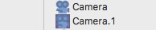

カメラオブジェクトすべてのシーンには、少なくとも１つのカメラオブジェクトが必要です。カメラオブジェクトがない場合、3D ビュー上で灰色の背景が見えるだけでしょう。シーンに好きなだけカメラオブジェクトを置く事が可能ですが、１度に１つのカメラのみをアクティブにする事が出来ます。3D ビュー上で、アクティブなカメラから見たシーンが表示されます。  アクティブなカメラのアイコンは、どのカメラオブジェクトが現在アクティブかを確認できるように、オブジェクトブラウザ上でハイライトされます。3D ビューのツールバーで、"カメラ" を選択している場合に、アクティブなカメラから見たシーンが描画されます。 プロパティ
|